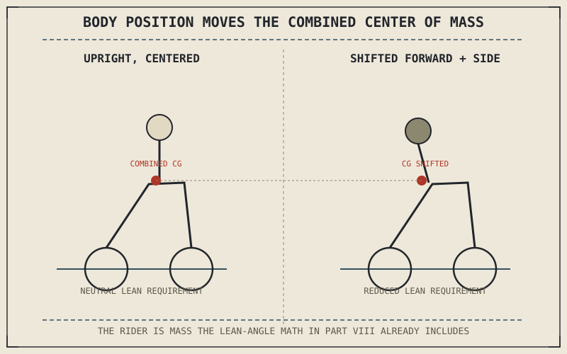

Eight parts of this book have treated the rider mostly as a source of inputs — a hand pulling a brake lever, a wrist rolling a throttle, a body briefly displacing a contact patch through countersteering. None of that is wrong, but it undersells something this part exists to correct: the rider isn't operating the motorcycle from outside it. The rider's mass, position, and posture are themselves part of the system every physics chapter in Part VIII just finished describing.
Chapter 8.12 closed Part VIII with a promise that this book would turn outward to how a rider actually uses everything explained so far. This chapter opens Part IX with the rider's own contribution to the system: body position.
The Rider Is Load, Not Just Input
A rider's body has real mass, sitting at a real height above the contact patches, and every chapter in Part VIII that discussed center of mass, load transfer, or lean angle was implicitly including the rider in that mass the whole time. Shifting body position — sliding back or forward on the seat, moving the torso, dropping a knee toward the ground in a corner — measurably shifts the combined center of mass Chapter 8.3 and Chapter 8.5 built their entire lean-angle and load-transfer math around, changing the required lean angle for a given cornering force and speed. Body position isn't a separate riding skill layered on top of the physics; it's a rider actively editing a variable that Part VIII's equations already depend on.
A Relaxed Upper Body and Why It Matters Mechanically
A tense, rigid grip on the handlebars does more than look uncomfortable — it can transmit unwanted steering inputs directly into the front wheel, interfering with the countersteering and self-centering trail behavior Chapter 4.5 and Chapter 4.4 described operating largely on their own. A relaxed grip and a supported, stable lower body — weighting the footpegs and tank rather than the arms — lets the front end do the job that geometry already assigned it, while the rider's upper body stays free to make deliberate steering inputs rather than accidental ones transmitted through fatigue or tension. This is a mechanical argument for relaxation, not just a comfort one.
Body position isn't a soft skill added on top of the physics this book has explained — it's a rider directly manipulating the center of mass, load distribution, and steering interference that Parts IV through VIII already built their entire analysis around.

A rider shown upright and a rider shown shifted forward and to the side, with the combined center of mass of bike and rider marked in each position, showing how body position measurably relocates that combined center of mass.
A Common Misconception, Cleared Up Early
It's tempting to treat good body position purely as an aesthetic or comfort matter — sitting up straight, looking relaxed, appearing confident. Every element of body position this chapter has described connects directly to a specific mechanical consequence covered somewhere in Parts IV through VIII: shifting mass changes lean-angle requirements, grip tension interferes with countersteering, weighting the pegs versus the bars changes how much unwanted input reaches the front wheel. Good body position is good body position because of what it does to variables this book has already shown matter, not because it looks a certain way.
Where This Leads
Body position sets up how a rider's mass and posture interact with the machine. The next chapter turns to the rider's actual control inputs — clutch, throttle, and the smoothness that connects them — building the foundation the rest of this part's specific techniques will rely on. Chapter 9.2 covers that directly.
Key Concepts to Remember
- The rider's mass and position are part of the combined center of mass that Part VIII's lean-angle and load-transfer physics already depend on.
- A tense grip can transmit unwanted steering input into the front wheel, interfering with countersteering and trail's self-centering behavior.
- Every element of good body position connects to a specific mechanical consequence already established earlier in the book, not just appearance or comfort.
Cross-References
| ← Ch. 8.3 | Established the lean-angle relationship depending on mass distribution; this chapter shows body position directly editing that mass distribution. |
| ← Ch. 4.5 | Explained countersteering's mechanism; this chapter shows how a tense grip can interfere with that same mechanism. |
| → Ch. 9.2 | Covers basic control — clutch, throttle, and smoothness — the foundation this part's specific techniques build on. |